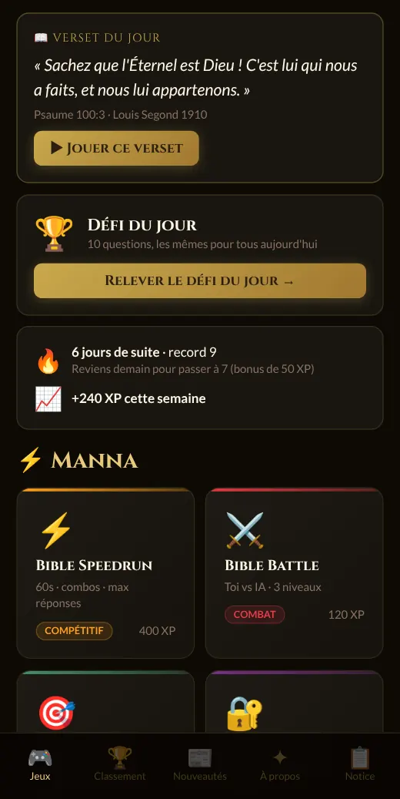
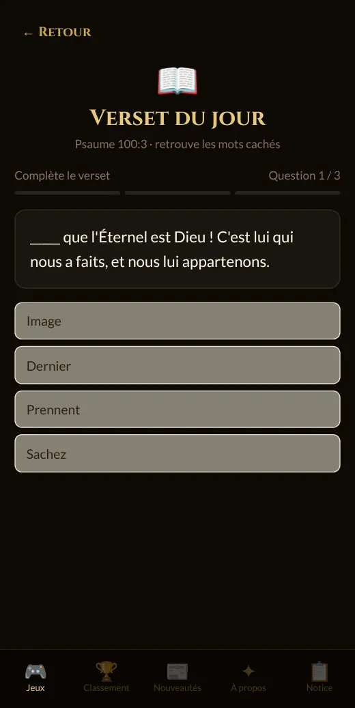
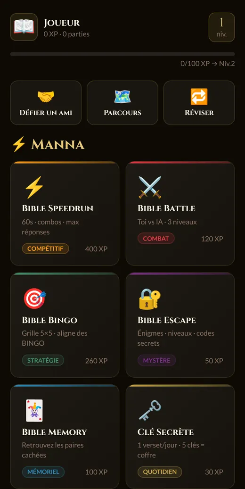
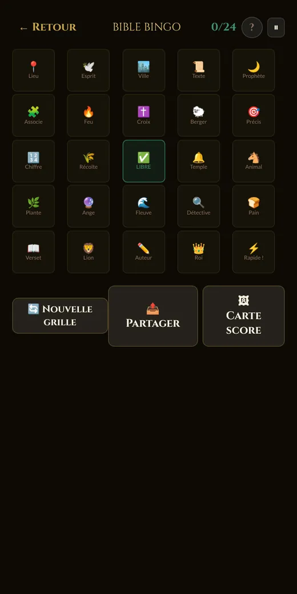
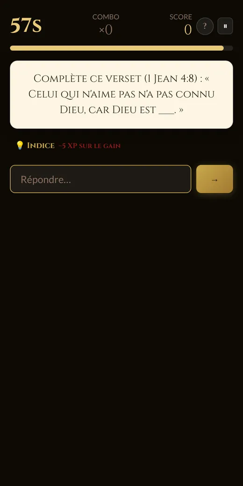
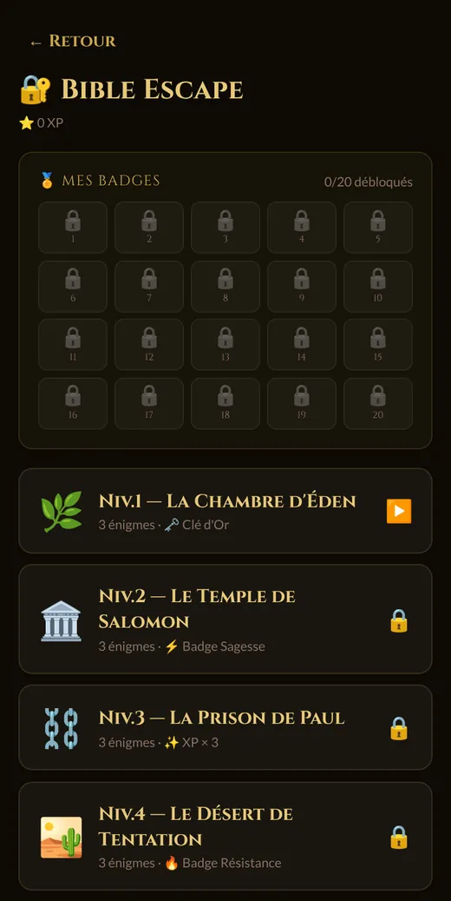

Application mobile & web
Apprends la Bible
en jouant.
Neuf mini-jeux bibliques avec un système d'XP et un classement mondial. Chaque partie aborde les textes d'une façon différente, et on finit par vraiment les retenir.
Jouer maintenant →
Jouable sur Android et iPhone en version PWA, gratuitement.
Voir comment faire
Pas encore d'application native sur Android ni sur iPhone.
En savoir plus
📖 VERSET DU JOUR
Aperçu
Le jeu en images






Essaie tout de suite
3 questions, sans compte
Version PWA
Joue sur Android et iPhone
Pas besoin de passer par un store. Ouvre Manna dans ton navigateur, puis ajoute-le à ton écran d'accueil.
Ouvre le lien dans Chrome, puis menu ⋮ → « Installer l'application ».
Ouvre le lien dans Safari, puis Partager → « Sur l'écran d'accueil ».
Les 9 jeux
Neuf façons d'aborder la Bible
Chaque jeu repose sur une mécanique différente : rapidité, mémoire, déduction, stratégie. Tous puisent dans les mêmes textes, mais ils ne sollicitent pas l'apprentissage de la même manière.
Bible Speedrun
Bible Battle
Bible Bingo
Bible Escape
Bible Memory
Clé Secrète
Chronologie
Mots mêlés
Mots croisés
Fonctionnalités
Conçu pour durer
Application native
Pas encore sur les stores
Manna n'est pas encore disponible en application native, ni sur Android ni sur iPhone. En attendant, la version PWA fonctionne sur les deux.
L'application est en test fermé sur Google Play. Les bêta-testeurs qui rejoignent l'aventure m'aident à valider la mise en production.
Une application iPhone est prévue dès que possible.
Dans ton message, indique l'adresse Gmail de ton compte Google Play : c'est elle qui te donne accès au test, donc c'est la même que celle du Play Store de ton téléphone (un compte Google Workspace fonctionne aussi). Elle sert uniquement à t'ajouter à la liste des testeurs, jamais à t'envoyer du spam ni de la publicité.
Le projet
Pourquoi « Manna » ?
Dans la Bible, la manne est le pain venu du ciel que Dieu donne chaque matin au peuple d'Israël, dans le désert (Exode 16). Il fallait la recueillir chaque jour, un peu à la fois. Quand les Hébreux l'ont découverte, leur première réaction a été une question : « Qu'est-ce que c'est ? » (Exode 16:15).
Pour un jeu de questions, on ne pouvait pas rêver mieux. Manna, c'est se nourrir de la Bible un peu chaque jour, une question après l'autre.
Beaucoup de gens lisent la Bible, mais peu arrivent vraiment à retenir les passages. Les liens entre les textes et les contextes leur échappent aussi. Ce n'est pas un manque d'intérêt. C'est souvent une simple question de méthode.
Or le jeu est un excellent outil d'apprentissage. Quand on joue, le cerveau ne s'implique pas de la même façon : on réfléchit, on teste, on se trompe, on recommence. Et surtout, on retient.
Un socle biblique commun
Manna s'appuie sur les textes et les récits communs aux principales traditions chrétiennes, pour rester accessible au plus grand nombre. Le but n'est pas de défendre une confession en particulier, mais d'offrir une façon ludique de découvrir la Bible et de mieux la connaître, en la mémorisant au fil des parties.
Chaque question renvoie à une référence biblique. Les énoncés s'en tiennent aux faits directement établis par les textes et évitent autant que possible les débats confessionnels et les interprétations particulières. Rien n'est parfait du premier coup : les retours des testeurs m'aident à lever les ambiguïtés, une question après l'autre.
Le projet est développé de manière indépendante. Chaque jeu, chaque fonctionnalité vient d'expériences et d'essais successifs. Manna évolue encore, et les retours des utilisateurs comptent beaucoup pour le faire grandir.
👋 Derrière Manna, il y a Lia
Manna n'est pas né dans un grand studio. Derrière le projet, il y a… moi, Lia. Oui, c'est vraiment mon prénom 😄. Avec l'IA partout aujourd'hui, je commence à croire que mes parents étaient visionnaires.
Je suis mariée, maman de trois enfants, chrétienne, salariée à temps plein, et je ne viens pas du monde du développement logiciel. J'ai commencé Manna pour découvrir le vibe coding, apprendre en faisant et surtout voir jusqu'où je pouvais aller avec une idée… et beaucoup de curiosité.
Au départ, c'était une petite expérimentation. Puis sont arrivés les jeux, les défis, les niveaux, l'XP, les bugs improbables, les corrections… et plus d'un an d'apprentissage. 😅
Ma foi fait naturellement partie de l'histoire de Manna : j'avais envie de créer une façon ludique de découvrir et redécouvrir la Bible, tout en construisant un jeu qui puisse être accessible au plus grand nombre.
J'utilise l'intelligence artificielle comme outil pour m'aider à coder, chercher, tester et apprendre, mais Manna reste un projet humain et indépendant : les idées, les choix et la direction du projet sont les miens.
Aujourd'hui, Manna continue d'évoluer grâce aux tests et aux retours des joueurs. Une question ambiguë, un bug, une bonne idée… tout cela aide le jeu à grandir.
Bref : beaucoup de curiosité, un peu d'obstination, quelques soirées trop longues devant l'ordinateur… et surtout beaucoup de plaisir à créer. 💛
Bienvenue dans l'aventure Manna.
Politique de confidentialité
Vos données
Dernière mise à jour : novembre 2026. Cette politique s'applique à l'application mobile
Manna (com.liabra.manna),
à sa version web installable (PWA) sur Android et iPhone, et au site web associé.
1. Responsable du traitement
Manna est un projet indépendant, développé et édité par Lia (personne physique), seule responsable du traitement de vos données. Contact : manna.app@proton.me. Voir aussi les mentions légales.
2. Données collectées
Manna collecte uniquement les données nécessaires au fonctionnement de l'application. Deux modes d'inscription sont proposés :
- Inscription avec e-mail : pseudonyme, adresse e-mail et mot de passe (stocké sous forme de hash cryptographique, jamais en clair). L'e-mail ne sert qu'à vous envoyer le lien de réinitialisation du mot de passe, si vous le demandez
- Inscription sans e-mail (phrase secrète) : pseudonyme et phrase de 12 mots (BIP39) servant à vous authentifier, conservée uniquement sous forme d'empreinte cryptographique. Aucune adresse e-mail n'est demandée ni conservée dans ce mode
Dans les deux cas, sont également collectés :
- Des statistiques de jeu : points XP, parties jouées, progression par jeu et par parcours, streak quotidien, défis et groupes auxquels vous participez
- La date de votre dernière activité (connexion, partie, check-in du streak), pour calculer le bonus de streak et supprimer les comptes inactifs
- La date à laquelle vous avez confirmé avoir 15 ans ou plus, ou l'accord d'un parent ou tuteur (aucun âge ni date de naissance n'est demandé)
- Des indicateurs anti-triche (par exemple le nombre de parties terminées anormalement vite), utilisés pour garder le classement équitable. Aucune sanction n'est automatique
L'application mesure aussi son audience de façon anonyme : des compteurs agrégés par jour (système, mode d'utilisation, installations), sans identifiant, sans cookie et sans lien avec un compte. Pour limiter les abus, le serveur compte les requêtes à partir d'une empreinte cryptographique de l'adresse IP (jamais l'adresse elle-même), supprimée au bout d'une heure environ au plus.
Le compteur de joueurs en ligne fonctionne de la même façon : à chaque ouverture, l'application tire un identifiant aléatoire qu'elle garde uniquement en mémoire (rien n'est écrit sur votre appareil), et envoie un signal par minute tant qu'elle est ouverte. Cet identifiant n'est relié ni à un compte, ni à une adresse IP, ni à un nom. Il sert uniquement à compter combien de joueurs sont là, et n'est affiché qu'à partir de quelques joueurs. Sur ce site, le navigateur lit ce nombre et le verset du jour auprès du serveur du jeu : le serveur voit alors, comme pour toute visite, votre adresse IP et votre navigateur, sans rien enregistrer de plus. La démo « 3 questions » fonctionne entièrement dans votre navigateur.
Le fil « Ça bouge sur Manna » affiche les derniers exploits réels des joueurs (un niveau atteint, un parcours terminé…) sans aucun pseudo : le serveur ne garde que le type d'événement et l'heure, puis l'efface au bout de 24 heures. Les réglages de sons et d'animations restent sur votre appareil.
3. Données non collectées
- Aucun numéro de téléphone ni donnée d'identité réelle au-delà du pseudonyme
- Aucune donnée de localisation
- Aucun suivi publicitaire ni traceur tiers : le site ne charge ni police ni script externe. Deux petites requêtes partent vers le serveur du jeu, pour lire le nombre de joueurs en ligne et le verset du jour (voir ci-dessous)
- Aucun cookie : le site ne garde dans votre navigateur que votre choix de thème clair ou sombre
- Aucune donnée de paiement (l'application est entièrement gratuite)
- Aucune donnée sur vos croyances : jouer à Manna ne vous demande jamais votre religion
4. Finalités et bases légales
- Créer et utiliser votre compte : vous authentifier, retrouver et calculer votre progression (XP, streak, parcours), envoyer le lien de réinitialisation du mot de passe. Base légale : l'exécution du service que vous demandez (art. 6.1.b du RGPD)
- Afficher le classement public : pseudonyme, avatar et XP. Base légale : mon intérêt légitime (art. 6.1.f), le classement étant au cœur du jeu. Vous pouvez vous y opposer en supprimant votre compte, ou en me le demandant par e-mail pour être masqué
- Assurer la sécurité et l'équité : limiter les abus et la triche, mesurer l'audience de façon anonyme, afficher le nombre de joueurs en ligne. Base légale : mon intérêt légitime (art. 6.1.f)
- T'ajouter aux testeurs Android : si tu m'écris pour devenir testeur, ton adresse Gmail sert uniquement à t'ajouter à la liste des testeurs sur Google Play, jamais à t'envoyer du spam ni de la publicité. Base légale : ta demande et ton consentement
- Vérifier l'âge déclaré : conserver la date de votre confirmation « 15 ans ou plus, ou accord d'un parent ». Base légale : obligation légale de recueillir l'accord d'un parent en dessous de 15 ans (art. 8 du RGPD et art. 45 de la loi Informatique et Libertés)
5. Durée de conservation
- Vos données de compte et de jeu sont conservées tant que votre compte existe.
- Un compte sans aucune activité pendant 24 mois est supprimé automatiquement, avec ses données. Les parties, défis et appartenances aux groupes partent avec lui.
- Un défi entre amis disparaît tout seul 14 jours après sa création.
- Le lien de réinitialisation du mot de passe est valable 30 minutes.
- Les compteurs de limitation de requêtes sont supprimés au bout d'une heure environ au plus.
- Les signaux du compteur de joueurs en ligne sont supprimés 10 minutes après le dernier envoi.
- Les événements du fil d'activité anonyme sont supprimés au bout de 24 heures.
6. Stockage, sous-traitants et sécurité
Les données applicatives de Manna sont hébergées sur des infrastructures situées dans l'Union européenne : le serveur applicatif Railway à Amsterdam (Pays-Bas) et la base MongoDB Atlas sur AWS à Paris (eu-west-3), en France, répliquée sur trois nœuds.
Pour faire fonctionner Manna, je fais appel à des sous-traitants avec lesquels un contrat de traitement des données est signé : Railway (serveur), MongoDB Atlas sur AWS (base de données), un prestataire d'envoi d'e-mails (uniquement pour le lien de réinitialisation du mot de passe) et GitHub (hébergement du site). Ce sont des sociétés soumises au droit américain : leurs éventuels transferts de données hors de l'Union européenne reposent sur les clauses contractuelles types et, le cas échéant, sur le cadre de protection des données UE-États-Unis (Data Privacy Framework).
Le site web que vous consultez (cette page et la page de suppression de compte) est hébergé par GitHub Pages (GitHub, Inc.), dont les serveurs peuvent se trouver hors de l'Union européenne. Comme tout hébergeur, GitHub reçoit techniquement votre adresse IP et les informations de connexion de votre navigateur lorsque vous visitez le site, et peut les conserver dans ses journaux. Je n'y ai pas accès et je ne les exploite pas. Leur traitement relève de la déclaration de confidentialité de GitHub.
Les mots de passe et phrases secrètes ne sont jamais stockés en clair : seule leur empreinte cryptographique (bcrypt) est conservée en base. Les communications entre l'application et le serveur sont chiffrées via HTTPS.
En cas de violation de données susceptible de vous exposer à un risque, je préviens la CNIL dans les 72 heures, et vous-même sans délai lorsque le risque est élevé.
7. Partage des données
Aucune donnée personnelle n'est vendue, louée ou partagée avec des tiers à des fins commerciales. Le pseudonyme, l'avatar et le score XP sont visibles publiquement dans le classement de l'application. Choisissez donc un pseudonyme qui ne vous identifie pas.
8. Enfants et adolescents
Manna s'adresse à toute la famille, mais en France un mineur de moins de 15 ans ne peut consentir seul au traitement de ses données : il lui faut l'accord d'un parent ou tuteur. À l'inscription, une case à cocher demande donc de confirmer d'avoir 15 ans ou plus, ou l'accord d'un parent ou tuteur. Aucun âge ni date de naissance n'est collecté. Le jeu n'a pas de messagerie entre joueurs, les pseudonymes sont filtrés, et le compte « sans e-mail » permet de jouer sans fournir aucune adresse. Un parent qui découvre le compte de son enfant peut demander sa suppression par e-mail, à tout moment.
9. Vos droits et la suppression de vos données
Vous disposez des droits suivants sur vos données :
- Accès et portabilité : dans l'application, ouvrez votre profil puis « Télécharger mes données » pour obtenir un fichier JSON de toutes vos données
- Rectification : vous pouvez modifier votre pseudo et votre avatar depuis votre profil
- Effacement : vous pouvez supprimer votre compte directement dans l'application, depuis votre profil : la suppression est alors immédiate et définitive. Vous pouvez aussi en faire la demande par e-mail ; elle est alors traitée sous 30 jours maximum. La page de suppression de compte détaille les deux procédures. Dans les deux cas, la suppression est irréversible
- Opposition et limitation : par e-mail, notamment pour être masqué du classement
Pour toute demande par e-mail, je réponds dans un délai d'un mois. Si vous estimez que vos droits ne sont pas respectés, vous pouvez déposer une réclamation auprès de la CNIL (cnil.fr/fr/plaintes).
10. Contact
Pour toute question relative à cette politique ou à vos données : manna.app@proton.me, ou via le formulaire de contact.